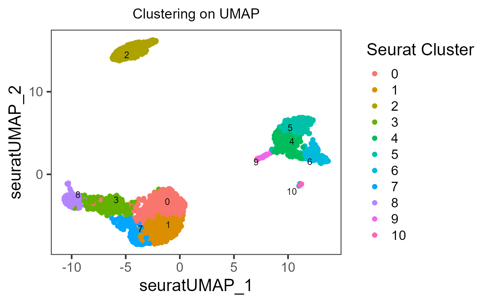
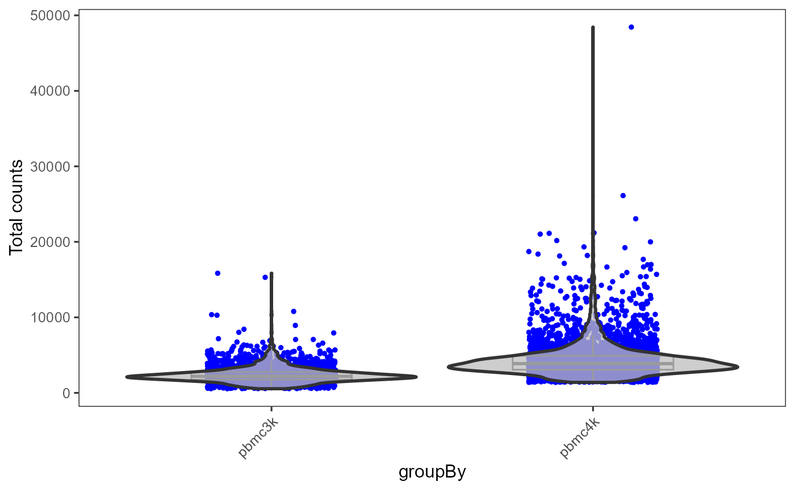
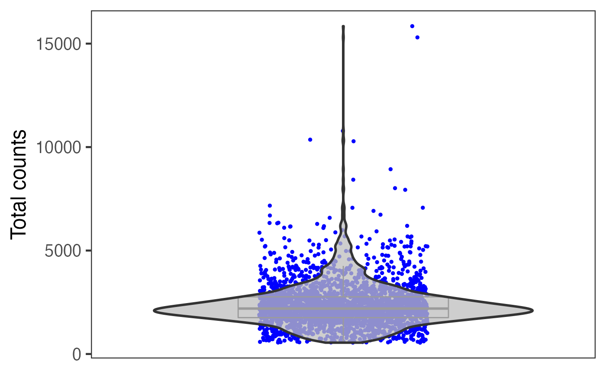
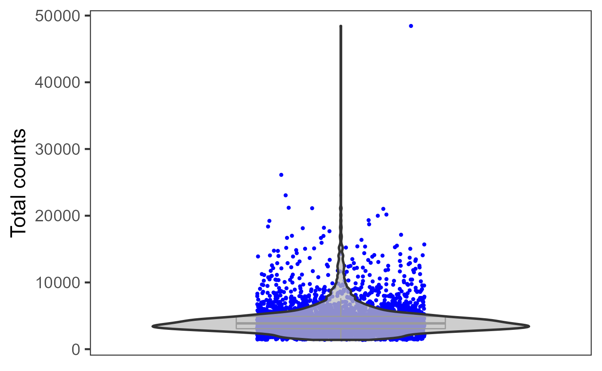

SingleCellTK provides plenty of methods to visualize users analysis, including the plotting for intermediate attribute for parameter decision, traditional scatter/box/violin plot for cells, and heatmap. Additionally, there are also wrappers of the base functions that are used for analysis type specific visualization. (e.g. QC metric plotting, differential expression heatmap) A full list of visualization functions can be found in the reference tab of this documentation site.
Workflow specific visualization should be introduced in the documentation of the related steps (e.g. QC metric plotting, HVG plotting, or differential expression plotting). Here, we would provide some examples for the most frequent use case.
Here we will take PBMC3k dataset, from “10X”, as an example. First we will do a quick clustering with the Seurat curated workflow implemented in SCTK.
library(singleCellTK)
pbmc3k <- importExampleData("pbmc3k")
# It is recommended to deduplicate the feature names, as this example data does
# have duplicated feature names that might cause failure in downstream analysis.
pbmc3k <- dedupRowNames(pbmc3k)
# QC and filtering skipped for quick demonstration
# Users are **not recommended** to skip it in practical analysis
pbmc3k <- seuratNormalizeData(pbmc3k, "counts")
pbmc3k <- seuratScaleData(pbmc3k)
pbmc3k <- seuratFindHVG(pbmc3k)
pbmc3k <- seuratPCA(pbmc3k)
pbmc3k <- seuratFindClusters(pbmc3k)
# With `seuratFindClusters()`, the clustering result would be saved to the
# `colData` slot with the name "Seurat_louvain_Resolution0.8" by default.
# Have a check on the summary of the clustering result
table(pbmc3k$Seurat_louvain_Resolution0.8)##
## 0 1 2 3 4 5 6 7 8 9 10
## 550 492 349 302 257 235 159 157 149 36 14Then we will present the method to generate a scatter plot of the UMAP of this dataset, with clusters labeled by color.
pbmc3k <- seuratRunUMAP(pbmc3k)
plotSCEDimReduceColData(inSCE = pbmc3k, # Specify the object first
reducedDimName = "seuratUMAP", # Specify the dimension/coordinate
colorBy = "Seurat_louvain_Resolution0.8", # Specify colData (cell annotation)
legendTitle = "Seurat Cluster", # (Optional)
title = "Clustering on UMAP" # (Optional)
)
As users might have tried, the essential input are inSCE, reducedDimName, and colorBy. Other arguments are all optional, but users can explore them to best clarify their intension.
Additionally but occasionally, shape argument is also useful for double level annotating.
In SCTK, there are plotting functions that are aimed for other attributes other than colData and reducedDim. For example, plotSCEDimReduceFeatures() focuses on reducedDim and feature expression, In most of base SCTK plotting functions, which starts with “plotSCE”, users can easily figure out the usage by checking the function manual and see which arguments are required.
When there are multiple samples in one dataset and it is necessary to have separation on them, users can invoke sample or groupby argument in most of base SCTK plotting functions.
pbmc3k <- importExampleData("pbmc3k")
pbmc3k <- dedupRowNames(pbmc3k)
pbmc4k <- importExampleData("pbmc4k")
pbmc4k <- dedupRowNames(pbmc4k)
sceList <- list(pbmc3k = pbmc3k,
pbmc4k = pbmc4k)
# By combining, a "sample" colData annotation is set by default with the
# names of sceList.
pbmc <- combineSCE(sceList = sceList,
by.r = colnames(rowData(pbmc3k)),
by.c = colnames(colData(pbmc3k)),
combined = TRUE)
pbmc <- runPerCellQC(pbmc)
plotSCEViolinColData(inSCE = pbmc,
coldata = "total",
groupBy = "sample",
ylab = "Total counts"
)
Otherwise, if users need individual plot for each of the sample, or indeed make individual plots by any categorical groupingon cells, use sample argument.
plotSCEViolinColData(inSCE = pbmc,
coldata = "total",
sample = pbmc$sample,
ylab = "Total counts"
)